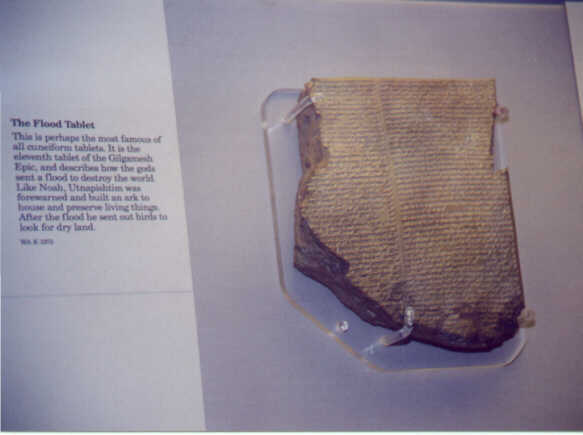

The text on the left says:
"This is perhaps the most famous of all cuneiform tablets. It is the eleventh
tablet of the Gilgamesh Epic, and describes how the gods sent a flood to destroy the
world. Like Noah, Utnapishtim was forewarned and built an ark to house and preserve
living things. After the flood he sent out birds to look for dry land."
WA K 3375
The tablet is small and the print is tiny. As you you look at the picture, realize that the artifact is around 4,000 years old.
